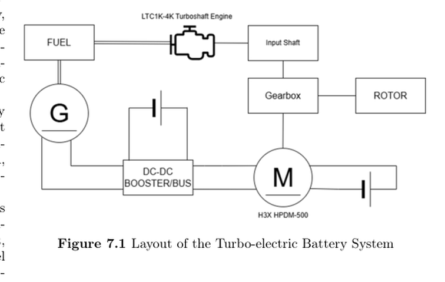
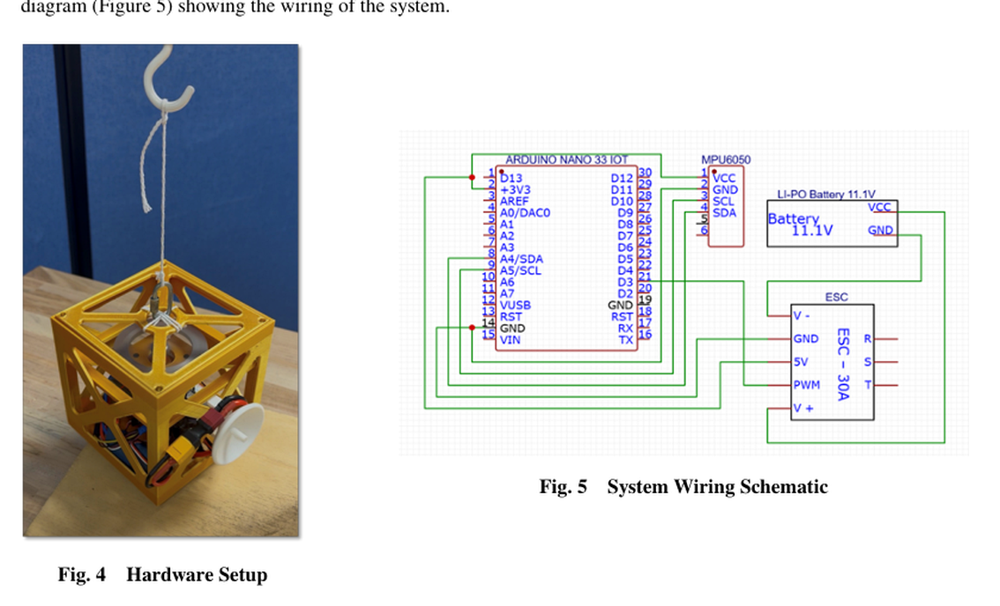
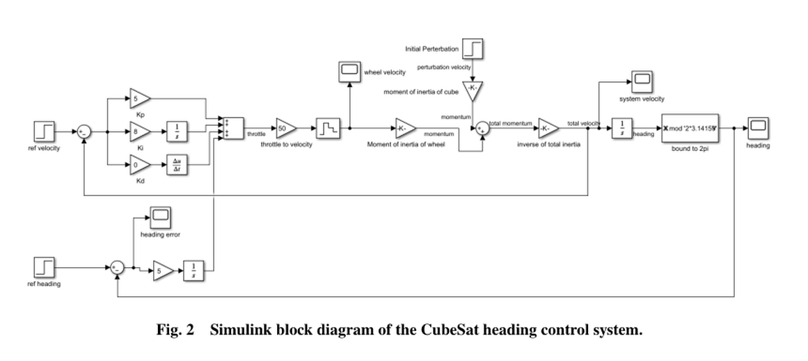
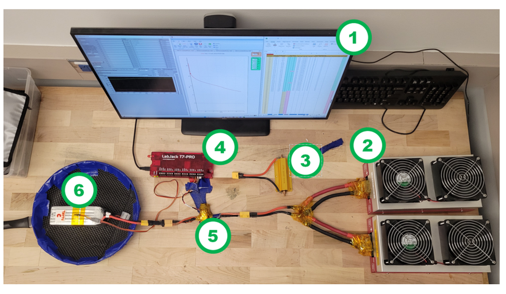

Career.
Aerospace engineer trained at Georgia Tech, with experience in robotic test automation, hybrid-electric propulsion, battery testing, and hardware integration.


Selected Work
01 — 05 / CLICK TO EXPAND01Automated Robotic Impact Testing
+
Automated Robotic Impact Testing
Developed a MATLAB interface for automated impact testing, combining Arduino-controlled actuation with force and acceleration data acquisition, visualization, calibration, and logging.
Integrated camera-based pattern recognition and target-coordinate calculations; troubleshot driver compatibility and MATLAB state issues. The project's reported test ranges were approximately 250–1,500 N in coupled mode and 3,000 N in released mode.
02Hybrid-Electric Tiltrotor Design
+
Hybrid-Electric Tiltrotor Design
Developed hybrid-electric power architecture and MATLAB mission-energy models across hover, conversion, and cruise. Assessed turbogenerator and battery power allocation and coordinated propulsion interfaces with aerodynamic and structures teams.
The Georgia Tech team placed second in the undergraduate division of the international competition.

03Reaction-Wheel Heading Control
+
Reaction-Wheel Heading Control
Designed and validated a single-axis PI-II reaction-wheel control prototype. Integrated Arduino, IMU, ESC, and BLDC hardware.
Team-level test results included 2.7 s rise time, 5.9 s settling time, less than 8.24% overshoot, and ±2.8° heading error. The project ranked first in class.


04Lithium-Polymer Battery Testing
+
Lithium-Polymer Battery Testing
Performed 6S Li-polymer pack cycle-life tests using a published protocol, with charging at up to 1C and 750 W constant-power discharge. Maintained test records and reviewed capacity and internal-resistance measurements.

Testing: Li-polymer battery cycling and measurement; data reviewed in Excel.
05Unmanned Aerial Systems
+
Unmanned Aerial Systems
Integrated UAV structures, 3D-printed battery enclosure, and thermal and optical sensor payloads. Conducted preprogrammed waypoint flights to evaluate stability and payload function.
Experience
ENGINEERING & LEADERSHIPTSMC Arizona · Incoming
Module Process Engineer — Lithography · Phoenix, Arizona
Moore Dynamics & Analytics Lab
Undergraduate Researcher · Georgia Tech · Robotic impact testing and instrumentation
VFS Student Design Team
Propulsion Lead · Hybrid-electric tiltrotor conceptual design
Vertical Lift Research Center of Excellence
Battery Test Operator · Li-polymer battery testing
ROK Defense Intelligence Command
Squad Leader & Intelligence Editor · Led an 11-person squad and coordinated defense/aerospace reporting
Education
ACADEMIC BACKGROUNDGeorgia Institute of Technology
M.S. Aerospace Engineering · Non-thesis
Georgia Institute of Technology
B.S. Aerospace Engineering · GPA 3.65 / 4.00 · Highest Honor
Hankuk Academy of Foreign Studies
HAFS · South Korea
Skills & Credentials
SELECTEDConnect
CONTACTFor professional inquiries, project discussions, or collaborations.